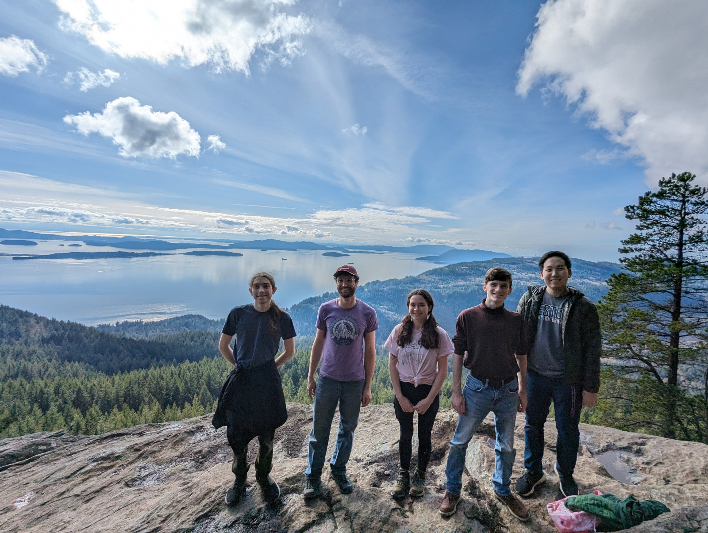
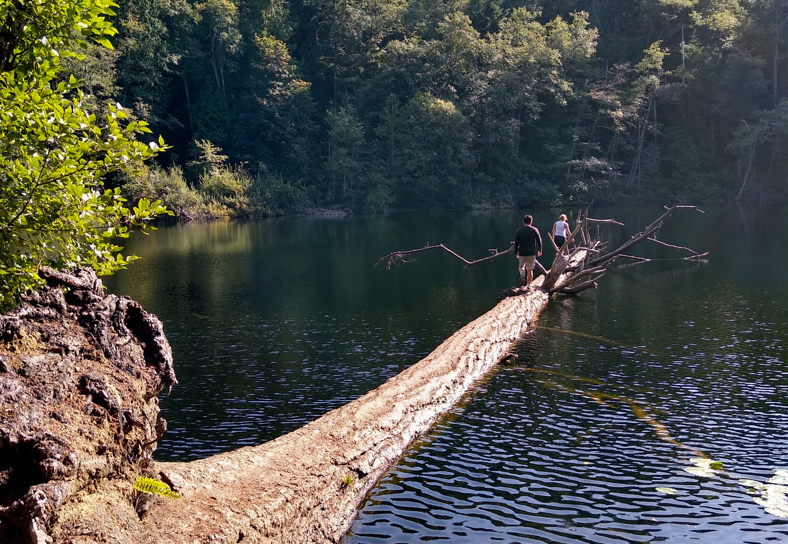

Members of the Lab
Current:-
Vivian White, CS master's
Cameron Henderson, CS master's
Joe Ewert, CS master's
Robin Preble, CS master's
Jackson Sweet, CS undergrad
Veronica Hahn, Math undergrad
Mayla Ward, Math/CS undergrad
Rory Bates, CS undergrad
Jed Pagcaliwagan, CS undergrad
Josh Sonnen, CS undergrad
Joining the lab
Students with diverse backgrounds and interests are encouraged to inquire about research!
If you are a student at Western and interesting in pursuing research with me, first take a look at my research and publications pages to see what we do. If these projects sound interesting, you may send me an email stating your interest. Please include a transcript and your expected graduation date. I am unable to accept any students with less than a year left towards graduation or not currently enrolled.
  Previous members:-
John-Paul Powers, CS master's
Caitlin Bannister, Behavioral Neuroscience undergrad, Goldwater scholar (now at Brown/NIH)
Suhyun "Michael" Ban, CS undergrad
Cameron Kaminski, CS undergrad (now at Purdue)
Angus Read, CS master's
Jessica Stillwell, Computer Science undergrad (now Data Scientist, PNNL)
Grant Chou, Computer Science undergrad (now UW Tuthill Lab research tech)
Biraj Pandey,
PhD student in UW Applied Math and NSF Graduate Fellow
Sean McCulloch, Computer Science MSc student (Allen Institute for Brain Science)
Seth Hirsh, PhD student in UW Physics
Joshua Mendoza, undergrad in UW Applied Math (now Group Leader, Applied AI Systems, PNNL)
Joseph Knox, Allen Institute for Brain Science (now Software Engineer, Facebook, Paris)
Nile Graddis, Allen Institute for Brain Science
Satpreet Singh, PhD student in UW Electrical and Computer Engineering
Yuchen Wang, undergrad in UW Computer Science and Engineering